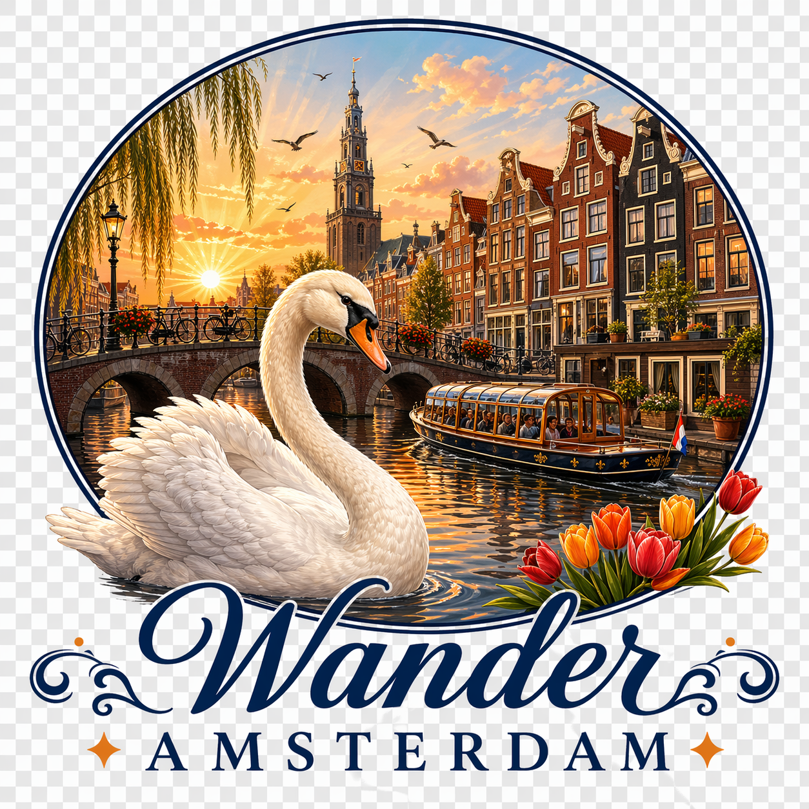

Amsterdam Small-Group Canal Cruise Including Snacks and Drinks
Welcome to the ultimate Amsterdam experience! We want to thank all our guests who have chosen Our Amsterdam…
Book Local. Support Local.

Handpicked Amsterdam tours and day trips.
Book direct with local tour guides and support local.
Neighbourhoods, canals and day trips out of the city. Find your perfect match.

Browse tours from trusted local operators
Welcome to the ultimate Amsterdam experience! We want to thank all our guests who have chosen Our Amsterdam…

Discover the rich history and vibrant culture of Andalusia on a captivating journey from Seville to the enchanting…

We will walk in the footsteps of Anne Frank and learn about the World War 2 stories, events and motives from a…

Experience a delightful 3-course dinner from Bistro Twee33 aboard a private boat while cruising through the historic…

Jump into a lively indoor football game with bumping, bouncing, and laughter. Play for an hour with 8 bubbles…
 ⭐ Popular
⭐ Popular
Dutch for a day Join us as we dive into our hippie history and get the insider perspective on Amsterdam's coffeeshop…

Sail through Amsterdam’s historic canals on a sleek, vintage Italian boat. Enjoy a private, peaceful cruise with…

No trip to Amsterdam is complete without an introduction to its artistic institutions. This private guided combo tour…
Embark on a unique two-hour private boat tour while savoring delicious Coffeelicious cookies from Coffeelicious…
 ⭐ Popular
⭐ Popular
Discover the Countryside around Amsterdam with a Local Guide! Distance 23 km (14 miles) Cycling experience is…

Visit the Girl with the Pearl Earring, The Hague & Delft City Take a journey through Dutch history on this private…

Experience the joy of cycling with our top-quality city bikes, designed for comfort and fun. With a wide selection…

Explore Amsterdam’s queer history on a lively 2-hour walk through the oldest district. Uncover hidden gems, protest…
Experience a delightful two-hour private boat cruise featuring a luxurious high tea on board. Savor homemade sweet…

Visit Royal Delft, the last 17th-century pottery factory, and watch artisans craft iconic Delft Blue pieces. Explore…

See Amsterdam or the countryside on a Private Group Tour with your family! Duration Based on Customer Preference We…
Experience a delightful 1.5-hour private boat cruise featuring a luxurious high tea on board. Savor homemade sweet…

Cruise the canals in absolute style aboard our unique Limousines with a silent electric engine! We are looking…

Rent a comfortable, well-equipped Gazelle bike in Rotterdam and glide over the Erasmusbrug. Helm, child seats, and…

Join a 4-hour vegan workshop inspired by Ottolenghi’s Middle Eastern flavors. Learn professional knife skills, create…

Cycle through Noord Holland’s scenic landscape to Zaanse Schans, explore historic windmills, visit a cheese farm and…

Discover the enchanting city of Leuven, where academic history meets vibrant culture. Stroll through the…

Start your visit to Amsterdam by diving into its rich history and learn how a small 12th century fishing village with…

For those who aren’t familiar with Dutch culture – and who is really? – we will explore its rich and vibrant past on…
We connect you directly with Amsterdam's best local tour operators.
Every tour is from a verified local operator. Real businesses, real experiences, real gezellig hospitality.
Book directly with the tour operator at their prices.
Your booking supports Dutch families and small businesses.
Real-time availability. Book now, get confirmed instantly.
Everything you need to plan your perfect Amsterdam getaway:
🔒 No spam, ever. Unsubscribe anytime.